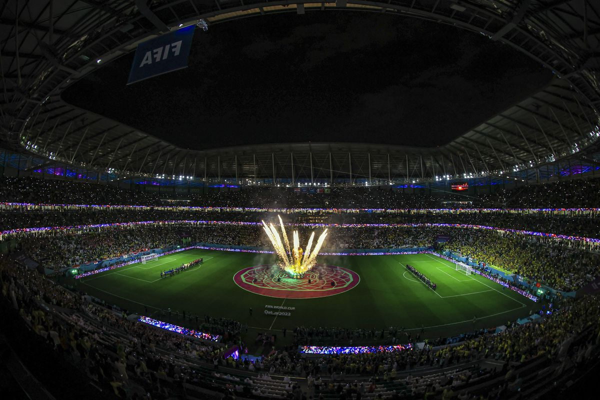

World Cup
The FIFA World Cup, often simply called the World Cup, is an international association football competition contested by the senior men's national teams of the members of the Fédération Internationale de Football Association (FIFA), the sport's global governing body. The tournament has been held every four years since the inaugural tournament in 1930, except in 1942 and 1946 when it was not held because of the Second World War. The reigning champions are Argentina, who won their third title at the 2022 tournament.
The format involves a qualification phase, which takes place over the preceding three years, to determine which teams qualify for the tournament phase. In the tournament phase, 32 teams compete for the title at venues within the host nation(s) over about a month. The host nation(s) automatically qualify to the group stage of the tournament. The FIFA World Cup has been scheduled to expand to 48 teams for the 2026 tournament.
As of the 2022 FIFA World Cup, 22 final tournaments have been held and a total of 80 national teams have competed. The trophy has been won by eight national teams. Brazil, with five wins, are the only team to have played in every tournament. The other World Cup winners are Germany and Italy, with four titles each; Argentina, with three titles; France and inaugural winner Uruguay, each with two titles; and England and Spain, with one title each.
The World Cup is the most prestigious association football tournament in the world, as well as the most widely viewed and followed single sporting event in the world. The viewership of the 2018 World Cup was estimated to be 3.57 billion (close to half of the global population),while the engagement with 2022 World Cup was estimated to be around 5 billion with close to 1.5 billion people watching the final match.
Seventeen countries have hosted the World Cup, most recently Qatar, who hosted the 2022 edition. The 2026 tournament will be jointly hosted by Canada, the United States and Mexico, which will give Mexico the distinction of being the first country to host games in three World Cups.
